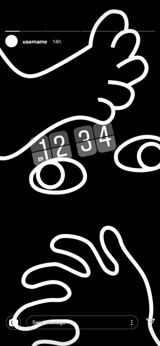
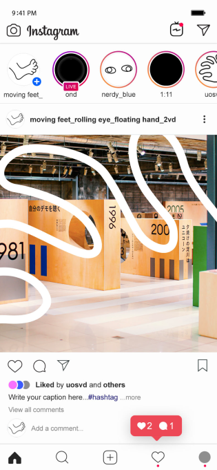
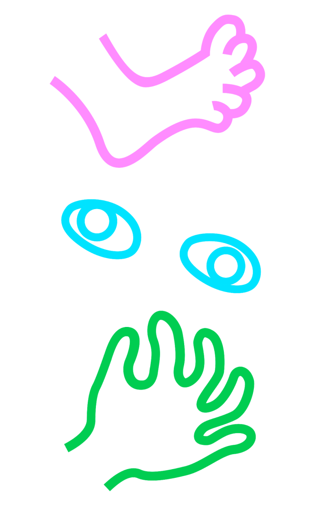
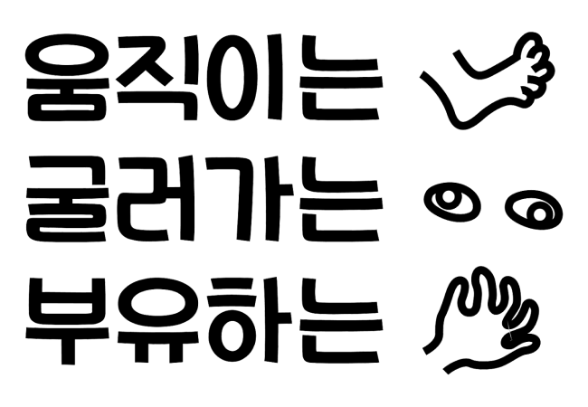
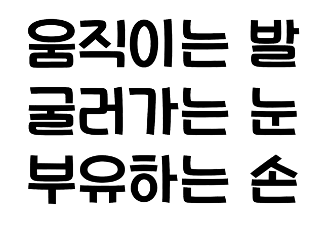
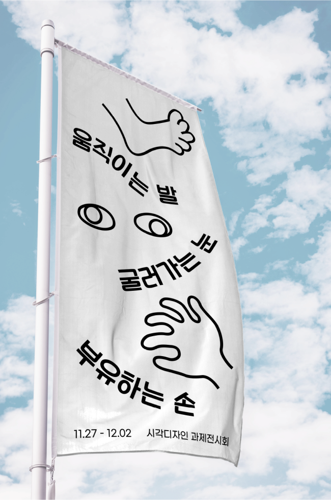
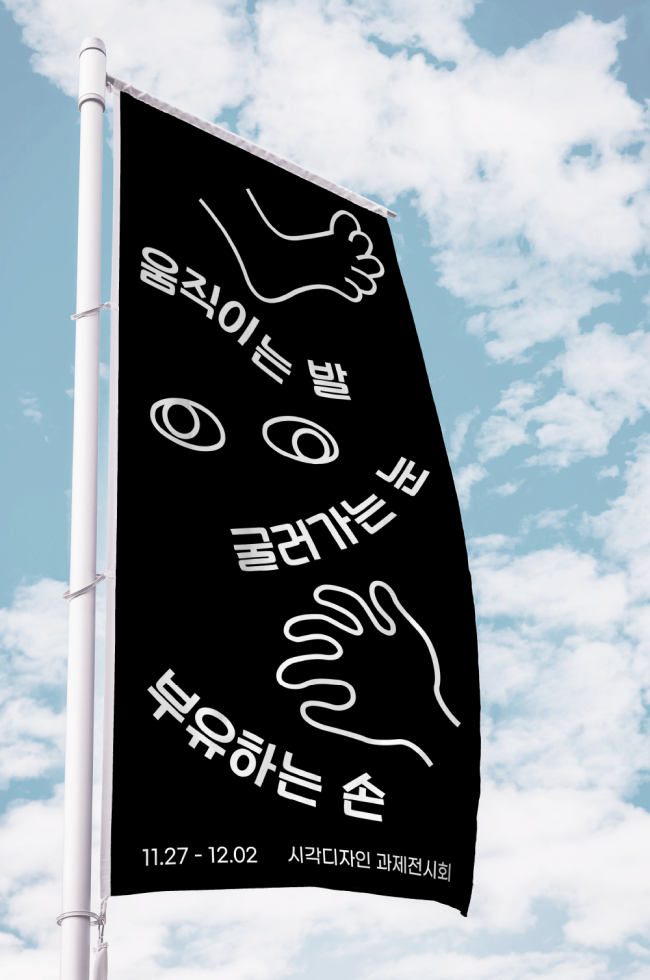
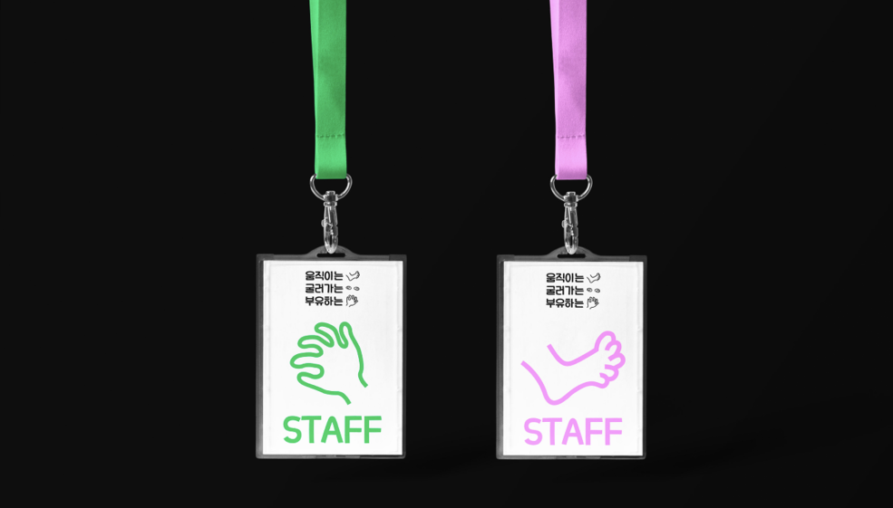
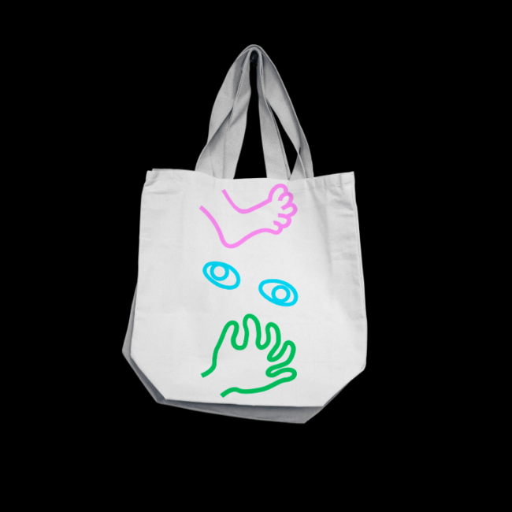
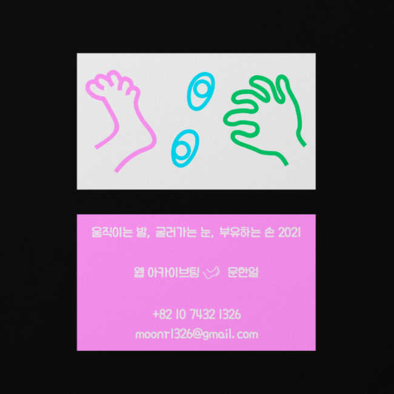

Project
Contact
moonr1326@gmail.com
Designer
Group Identity
문한얼
움직이는 발 굴러가는 눈 부유하는 손
Category
-
표어에서 묘사되는 정신없는 눈, 발, 손의 이미지를 일러스트로 그려 심볼을 디자인하였다.
각각의 심볼들은 상황에 맞게 함께 또는 따로 쓰일 수 있다. 디자인 전반적으로 괴짜 같지만 친근한 인상을 줄 수 있는 타입페이스와 색을 선정하였다.









